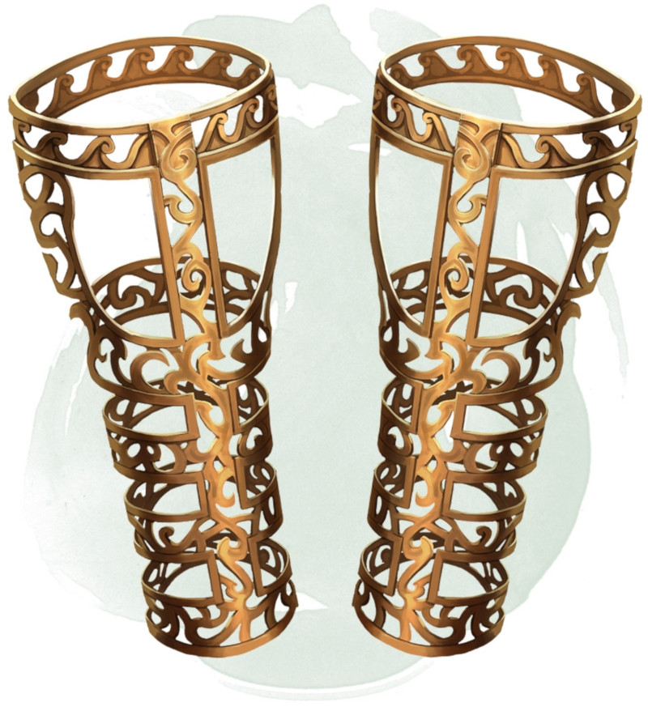

Bracelets de défense
[
Bracers of Defense
]
Objet merveilleux, rare (nécessite un lien)
Lorsque vous portez ces bracelets, vous obtenez un bonus de +2 à votre CA, à condition de ne porter aucune armure et de ne pas utiliser de bouclier.
Dungeon Master´s Guide (SRD)
→
Objets magiques D&D 5e
